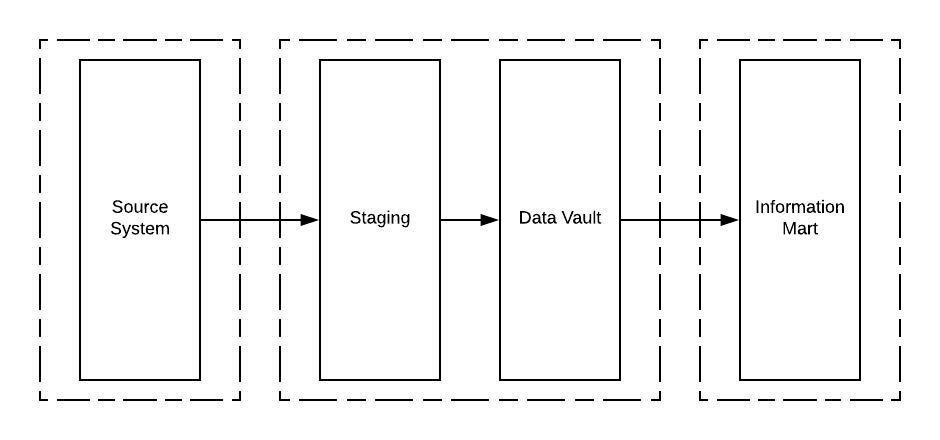
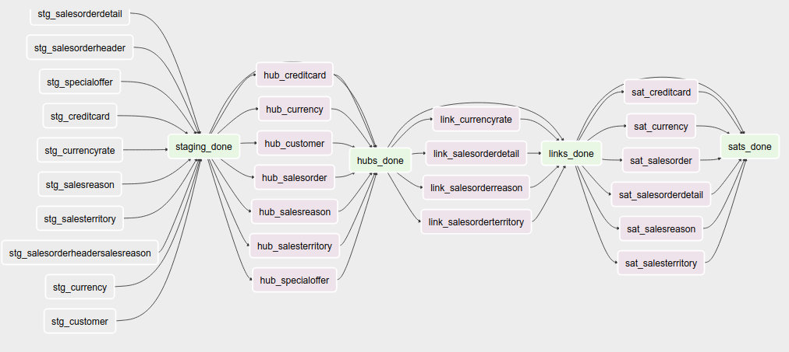

Data Vault 2¶
This is probably most elaborate example of how to use ETL with Apache Airflow. As part of this exercise, let’s build an information mart on Google BigQuery through a DataVault built on top of Hive. (Consequently, this example requires a bit more memory and may not fit in a simple machine). We’re going to start a postgres instance that contains the airflow database and another database for a (postgres port) of the adventureworks database often used by Microsoft.
The data will be staged into Hive and we’ll run Hive queries to populate the Data Vault model. Optionally, if you have a Google account you’d like to try out, you can set up a connection later on and load some flat tables into BigQuery out of the Data Vault as a final part of this exercise; that will basically become our information mart.
Note that similar to the Hive example, I’m using a special build of the puckel docker airflow container that contains the jar files for Hadoop, HDFS and Hive.
Important
The default login for “Hue”, the interface for the Cloudera quickstart container running Hive is cloudera/cloudera.
Important
The resulting data was not 100% tested and validated because of the effort involved. It is possible that queries contain mistakes or produce invalid data.
Important
In order to see the BigQuery example you need to have your own google cloud project active and set up your own service account that has at least google cloud storage and bigquery editing permissions (or give it project editing rights). Then you need to make an “information_mart” dataset in bigquery in that project and create a bucket name of your choice. After the bigquery connection is created, change the project ID to your project ID on GCP (this is needed as the ‘default’ google project).
Finally, let’s re-test all the work we did against the ETL principles that I wrote about to see if all principles are covered and identify what are open topics to cover for a full-circle solution.
About Datavault¶
In the Data vault example, we explained some of the benefits of using a datavaulting methodology to build your data warehouse and other rationales. Read up there for some of the core reasons why data vaulting is such a useful methodology to use in the middle.
This example uses some other techniques and attempts to implement all the best practices associated with data vaulting. The “2.0” refers to some improvements that have been made since the first version of the methodology came out. One of the primary changes is the use of hashes as a means to improve the parallel forward flow of the data going into the final information marts and intermediate processing. Hashing isn’t necessarily straight-forward in all situations and you should prepare for making some practical design decisions there.
Overall flow¶
This is the general flow to get data from the OLTP system into (eventually) the information mart. Here you can see how the Data Vault essentially fulfills the role of the Enterprise Data Warehouse as described by Ralph Inmon, years ago.
There are 3 dags in total. One dag starting with “init_” is just to bootstrap the example, you wouldn’t see this DAG in a production situation, because you’d typically use CI tools + other tools to maintain your schemas and you’d do the connection management in a different way. So ignore that DAG.
The ‘adventureworks’ DAG is the main point where five specific flows happen, which are marked by specific milestones:
- Staging
- Applying staging to hubs
- Applying staging to links
- Applying staging to satellites
- End dating satellites
After the DAG completes, the data warehouse is in a new state and can be requeried to refresh downstream data products, for example as would be done with the starschema DAG.
Staging flow¶
Staging is the process where you pick up data from a source system and load it into a ‘staging’ area keeping as much as possible of the source data intact. “Hard” business rules may be applied, for example changing the data type of an item from a string into a datetime, but you should avoid splitting, combining or otherwise modifying the incoming data elements and leave that to a following step. The latter are called “soft” business rules and are usually transformations related to interpretation of the data. In short: operations where you may lose information should be avoided.
The staging area is temporary and I’m assuming delta loads are possible from the source system because of a cdc solution being in place. If delta loads cannot be implemented due to a lack of proper CDC, then a persistent staging area (PSA) should be set up, so you can generate delta loads from there and identify the deletes. Both the latter and the CDC solution should be capable to detect deletes.
Our staging approach for all tables in the adventureworks dataset will be:
- Clear out staging table (truncate or drop). In the case of Hive, we use a temporary table with a date and time tag at the end. This means that each particular staging table can only reference data from the current data load.
- (optional) disable indexes. As we use Hive, this is not relevant, there are no indexes set.
- Bulk Read source data in order. In this example we bulk read “everything” from the entire source system because there are no useful change date/times in the source data. In a real application, you’d divide the data through the “updated_dtm” field that the CDC system is setting.
- Compute and apply system values: * Load date * Record source * A sequence number, which defines the record ordering in the current batch. * Hash for all business keys in a record. This is the record of the current table, but also business keys for all foreign keys into that table. The reason why this is important is because all surrogate sequences and primary keys that the source system may have should not have any significance in the data warehouse, unless they are also business keys for that table. This is the reason why I force the staging area to apply the hashes prior to loading it in the raw data vault. * (optionally) a hash diff compiled from all or certain attributes in the source data that is used to perform change comparisons to identify duplicates, so we don’t load records twice.
- Remove true duplicates
- Insert records into staging table
- (optional) rebuild indexes. Again, not relevant for this setup.
Given the above operations, we see that we should be able to apply a very common pattern to each source table that we need to ingest. The general strategy is that in the staging area, every record of interest for the current date partition gets loaded. In those records, the record gets a hash key assigned at the very least (even if that resolves to just a surrogate primary key) and all foreign keys result in inner joins to other tables, so that we can generate the hash key for the business keys in there. This is because the foreign keys will eventually convert to a link of some sort and having the hash key ready in staging allows us to parallellize the following stages as well. As a matter of fact, it feels wrong to resolve the hashes later. These lookups may have a higher impact on the source system because of the extra joins for each table, but these lookups have to be made ‘somewhere’ and because I believe the source system is where the surrogate keys are relevant, it should be resolved from there.
In the current implementation I’m using python code to apply the hashing, because it demonstrates that hashing is possible even if the database engine doesn’t implement your hash algorithm of choice.
Important
The adventureworks database has some serious design flaws and doesn’t expose a lot of useful “natural” business keys that are so important in data vaulting. Because businesses have people that talk about the data a lot, you should find a lot more references, identifiers and natural business keys in a true database setup that is actually used by and for people. The main staging setup is done in the “adventureworks_*.py” files, which reference the SQL files in the ‘sql’ folder. In the SQL, you’ll see the construction of the natural business keys at that stage. The python operator picks up the generated string and converts that into a hash using a hash function. The reason to do this per record is because a source database system doesn’t necessarily have the right capabilities to do this.
There’s an important remark to make about “pre-hashing” business keys in the staging area. It means that the decisions on what and how to hash are made in the staging area and there may be further issues downstream where these design decisions can come into play. As the objective is to follow the methodology, we go along with that and see where this takes us. If you feel unhappy about this, look into setting up a PSA, which will give you the ability to reload the whole DV at a later stage because all the staging data is preserved.
Another important note: notice how we don’t specify what hive staging tables should look like. We’re simply specifying what we want to see in the Hive table. Because Hive is “Schema On Read”, you can’t enforce nullability either, so there’s no reason to set up a structured destination schema because nothing can be enforced about it anyway.
Let’s look at the flow in more detail:
args = {
....
# We want to maintain chronological order when loading the datavault
'depends_on_past': True
}
...
# specify the purpose for each dag
RECORD_SOURCE = 'adventureworks.sales'
# Use a dummy operator as a "knot" to synchronize staging loads
staging_done = DummyOperator(
task_id='staging_done',
dag=dag)
# A function helps to generalize the parameters,
# so we can just write 2-3 lines of code to get a
# table staged into our datavault
def create_staging_operator(sql, hive_table, record_source=RECORD_SOURCE):
t1 = StagePostgresToHiveOperator(
# The SQL running on postgres
sql=sql,
# Create and recreate a hive table with the <name>_yyyymmddthhmmss pattern
hive_table=hive_table + '_{{ts_nodash}}',
postgres_conn_id='adventureworks',
hive_cli_conn_id='hive_advworks_staging',
# Create a destination table, drop and recreate it every run.
# Because of the pattern above, we don't need truncates.
create=True,
recreate=True,
record_source=record_source,
# Specifying the "load_dtm" for this run
load_dtm='{{execution_date}}',
# A generalized name
task_id='stg_{0}'.format(hive_table),
dag=dag)
# Putting it in the flow...
t1 >> staging_done
return t1
# Example of the effort of staging a new table
create_staging_operator(
sql='staging/salesorderheader.sql',
hive_table='salesorderheader')
Important design principles to focus on:
- Each staging table is tied to a processing run in airflow and is marked by its own YYYYMMDDTHHMMSS partition. The reason to include a time structure is to think ahead and ingest data in the data warehouse more frequently than once per day. Because we keep staging data separately this way, we don’t need to worry about multiple staging cycles in the same table and filter by load_dtm, except for getting the name of the table right. Doing it this allows us to continue to load data in staging even though we can’t perhaps (for some reason) load it into the DV yet.
- “depends_on_past” is set to True because we want to force loading data into the datavault in chronological order. The data into staging isn’t a critical step, but since each sub pipeline also contains operators for loading the datavault, the whole dag by default is set to the same principle.
- When everything was loaded, we can drop the temp staging table or decide to copy it to a partitioned PSA table.
- New tables can be added by creating a query for it and 3 lines of code, which looks like a great generalization for this process. It is definitely possible to set up a template and generate the required tables from an input table to further ease this process.
- Because of the previous point, the entire table staging process is very generic and predictable.
- There are three distinct parallel processing phases as one would expect from the design of data vault.
Data vault loading flow¶
Now that data is in staging, it is time to start loading the staging data into datavault. Use the “adventureworks_*” dags for that, there is one for each schema in the database. Here’s a diagram that demonstrates the strategy:
An important design decision has been made in this process:
Getting the business key hashes for all foreign key is a challenge and I opted to generate all hashes from the source database using INNER JOINs. The reason is that I’m assuming a CDC slave database system that has no other load and good optimization for querying and joining data on subselects of the driving table.
I think there are three possibilities to resolve this:
- Generate hashes for all primary+foreign keys from the source system (as in this implementation). The rationale is that surrogate sequence keys frequently used in an RDBMS should only have meaning within the context of that RDBMS, so it is important to apply business keys to business entities as soon as possible.
- Generate hashes for those identified business keys you happen to come across and then use more elaborate joins on the data vault (even joining on satellites in cases).
- Create a cache/lookup table for each source system in the staging area that then becomes an integral part of your data warehouse. The idea is to dissociate the surrogate key from the source system and convert that into a hash without adding significant load on the source system. The rationale is that the data warehouse needs the hash key in order to operate, but the source system has given all the data the DWH is asking for. The DWH itself should be responsible for caching and deliverying the hash key that is needed.
This is a block template of code significant for the loading part:
hubs_done = DummyOperator(
task_id='hubs_done',
dag=dag)
links_done = DummyOperator(
task_id='links_done',
dag=dag)
sats_done = DummyOperator(
task_id='sats_done',
dag=dag)
def create_hub_operator(hql, hive_table):
t1 = HiveOperator(
hql=hql,
hive_cli_conn_id='hive_datavault_raw',
schema='dv_raw',
task_id=hive_table,
dag=dag)
staging_done >> t1
t1 >> hubs_done
return t1
def create_link_operator(hql, hive_table):
t1 = HiveOperator(
hql=hql,
hive_cli_conn_id='hive_datavault_raw',
schema='dv_raw',
task_id=hive_table,
dag=dag)
# hubs
create_hub_operator('loading/hub_salesorder.hql', 'hub_salesorder')
....
# links
create_link_operator('loading/link_salesorderdetail.hql', 'link_salesorderdetail')
....
Each operator links to the dummy, which gives us the synchronization points. Because links may have dependencies outside each functional area (determined by the schema) some further synchronization is required there.
The loading code follows the same principles as the Data Vault 2.0 default stanzas:
Loading a hub is concerned about creating an ‘anchor’ around which elements referring to a business entity resolve. Notice the absence of “record_source” check, so whichever system first sees this business key will win the record inserted here.:
INSERT INTO TABLE dv_raw.hub_product
SELECT DISTINCT
p.hkey_product,
p.record_source,
p.load_dtm,
p.productnumber
FROM
advworks_staging.product_{{ts_nodash}} p
WHERE
p.productnumber NOT IN (
SELECT hub.productnumber FROM dv_raw.hub_product hub
)
Loading a link is basically tying some hubs together. Any details related to the characteristics of the relationship are kept in a satellite table tied to the link.
INSERT INTO TABLE dv_raw.link_salesorderdetail
SELECT DISTINCT
sod.hkey_salesorderdetail,
sod.hkey_salesorder,
sod.hkey_specialoffer,
sod.hkey_product,
sod.record_source,
sod.load_dtm,
sod.salesorderdetailid
FROM
advworks_staging.salesorderdetail_{{ts_nodash}} sod
WHERE
NOT EXISTS (
SELECT
l.hkey_salesorderdetail
FROM dv_raw.link_salesorderdetail l
WHERE
l.hkey_salesorder = sod.hkey_salesorder
AND l.hkey_specialoffer = sod.hkey_specialoffer
AND l.hkey_product = sod.hkey_product
)
Loading satellite is the point where chronological ordering becomes truly important. If we don’t get the load cycles in chronological order for hubs and links then the “load_dtm” for them will be wrong, but functionally the data vault should keep operating. Why is this only relevant for satellites? Because hubs and links do not have ‘rate-of-change’. The links document relationships, but these do not change over time, except for their supposed effectivity. Hubs document the presence of business keys, but these do not change over time, except for their supposed effectivity. Only satellites have a rate-of-change associated with them, which is why they have start and end dates. It is possible that a business key or relation gets deleted in the source system. In our our datavault we’d like to maintain the data there (we never delete except for corruption / resolving incidents). The way how that is done is through “effectivity” tables, which are start/end dates in a table connected to the hub or link that record over which time that hub or link should be active.
For satellites, the chronological ordering determines the version of the entity at a specific time, so it affects what the most current version would look like now. This is why they have to be loaded in chronological order, because if they were not, the last active record would be different and the active periods would probably look skewed. Another objective for loading it in chronological order is to eliminate true duplicates; if the records come in fast and do not have a chronological order than either true duplicates are not always detected or un-true duplicates are detected and records get eliminated.
Splitting a satellite is a common practice to record data that has different rates of change. For example, if a table has 40 columns as 20 columns change rapidly and 20 more slowly, then if we were to keep everything in the same table, we’d accumulate data twice as fast. By splitting it into 2 separate tables we can keep the detailed changes to a minimum. This is the typical stanza for loading a satellite. Pay attention to how in Hive you can’t specify destination columns. If you keep staging data in the same table you’d also have an additional WHERE clause that specifies load_dtm = xxxxx.
INSERT INTO TABLE dv_raw.sat_salesorderdetail
SELECT DISTINCT
so.hkey_salesorderdetail
, so.load_dtm
, NULL
, so.record_source
, so.carriertrackingnumber
, so.orderqty
, so.unitprice
, so.unitpricediscount
FROM
advworks_staging.salesorderdetail_{{ts_nodash}} so
LEFT OUTER JOIN dv_raw.sat_salesorderdetail sat ON (
sat.hkey_salesorderdetail = so.hkey_salesorderdetail
AND sat.load_end_dtm IS NULL)
WHERE
COALESCE(so.carriertrackingnumber, '') != COALESCE(sat.carriertrackingnumber, '')
OR COALESCE(so.orderqty, '') != COALESCE(sat.orderqty, '')
OR COALESCE(so.unitprice, '') != COALESCE(sat.unitprice, '')
OR COALESCE(so.unitpricediscount, '') != COALESCE(sat.unitpricediscount, '')
End dating¶
The hubs and links do not contain start and end dates, because they record relationships, even relationships that were valid at some point in time. If you need to cater for employees joining, leaving and joining again for example, you should use an “effectivity” table connected to the link or hub to cater for that.
The satellites do have validity dates, because you can have different versions of those. The way how you apply those can differ a bit, because you may not always have the required source data if you don’t have a change data capture setup. Then you’d only ever see the last version of a record or the records that the source system decided to maintain as history. The date you’d apply as start/end date could then differ.
It’s always very important to maintain the “load_dtm” and “load_end_dtm” separately as well, because you’d use that to identify data from batches that may have failed for example. If you maintain it, you can always remove data for an entire batch and reload it into the data vault.
The process of end dating is to apply end dates to records in the satellite tables. For Hive, because we can’t run updates, we’ll copy the data to a temp table and then copy it back to the original. We can use windowing functions like LAG/LEAD and PARTITION statements, so we use that to look ahead by one row for each partition to look up the next start date and apply that for the end date.
When a record for a partition has a NULL end_dtm, then it means it’s the active record. You could choose to explicitly indicate the active record too.
Star Schema¶
The star schema is built with the help of some multi-join queries. The dimensions are built up first and then the fact information is built on top of the dimensions. You don’t need to build the dimensions with one single query, it’s obviously permissible to run a multi-stage pipeline to get the dimensions built.
Here’s a [good article](https://towardsdatascience.com/a-beginners-guide-to-data-engineering-part-ii-47c4e7cbda71) on how Hive is used with dimensional data:
The dimensions in this example use the original hash key as main key for the dimensional entity and in the case of slowly changing dimensions (where dates are applicable and important), it tags the start date on top of the hash key of the entity to derive a new dimensional key.
The fact is built on top of one of the measures of interest. Usually, you’ll find that these are link tables, because they often link the entities in a context together. For example, the orderlineitem is a link table, because it links the order data with sold product data, applied discounts and some other data depending on the business.
The fact table can rapidly become complex if there is a lot of data to link together. Similar to building the dimension models, consider splitting up the complex queries by using temp tables that are joined together afterwards to compose the full picture.
The example shows how to generate a star schema from scratch without applying incremental changes. If your data vault grows a bit large than regenerating it from scratch will be very costly to do, if not impossible within the given timeframe. Refer to the article in this section for a method that shows how to copy the dimension of the day before and union that to new records in the dimension.
Future considerations¶
What is not shown in this example and which should be considered in real world scenarios:
- Dealing with “delete” records in data sources. You’d typically apply these as ‘effectivity’ records on hubs and links.
- Dealing with “record order” correctly. The current post-update scripts that do the end-dating assume there is one record per entity in the time interval, but there may be multiple. Make sure that the end dating script applies the end date to the records in the correct order and ensure the most recent record comes out on top with “NULL” applied in the end_dtm.
- Dealing with (potentially) large output (larger than 2GB). At the moment the worker reads in all the data in memory and then copies it again into a JSON structure.
There are ways to output data to multiple files in a single statement using a “named pipe” on the worker itself. The named pipe serves the function as a splitter. You’d then start a “linux split” command on the worker reading from the named pipe (which looks just like a file, except it cannot seek in the stream). The split command takes the input and splits the data into separate files of a particular maximum size or maximum number of lines. If you do this to a particular temporary directory of interest, you can then upload the files to GCP from that directory in one easy operation, either through the gsutil command or an operator.
with tempfile.NamedTemporaryDir(prefix='export_' as tmp_dir:
fifo_path = os.path.join(tmp_dir.name, 'fifopipe')
os.mkfifo(fifo_path)
p = subprocess.Popen(['split','--numlines','100000','-',prefix])
hiveHook.to_csv(<query>, fifo_path, ...)
p.communicate()
os.remove(fifo_path)
datafiles = [f for f in listdir(tmp_dir) if isfile(join(tmp_dir, f))
and f.startswith(prefix)]
for data_file in datafiles:
remote_name = '{0}.csv'.format(data_file)
gcp_hook.upload(self.bucket, remote_name, data_file)
Or use a call to gsutil to perform a data upload in parallel.
Data issues¶
The adventure works database isn’t the best designed OLTP database ever. Throughout querying and working with the data I found the following data issues:
- Address missed a row in the destination data. “Everett” has two records in address and the only difference is the stateprovinceid. Either the boundaries shifted or there was a correction made in the data.
- There are some 700 personid’s missing for “customer” in the source data. Looks like it malfunctioned and never got fixed?
- 209 products do not have sub categories, so I allowed that to be NULLable.
- There can be multiple sales reasons for a salesorder (as per the design). There is a hard business rule when constructing the dim_salesorder which picks the first sales reason by sales reason name ordered ascending to apply to the dimension.
- Because of an incomplete business key in address multiple records get created in the dim_address table (4 in total). This table gets cartesian joined again to populate the fact, which leads to a total of 16 records too many for a specific salesorder (‘16B735DD67E11B7F9028EF9B4571CF25D1017CF1’)
- Data has not been checked for consistency, correctness and bugs may exist anywhere in the code.